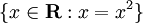

真正的尝试
相对来说，Erlang是一个非常小巧且简单语言（就像C比C＋＋简单一样）。Erlang内置了几种基础类型，如本章将会介绍的绝大部分基础类型。 强烈建议你的认真阅读，因为稍后的Erlang程序都会使用到本章内容。 (Reading it is strongly advised as it explains the building blocks for all the programs you'll write with Erlang later on.)
数字
Erlang的shell中 表达式必须使用句号结尾紧跟着是一个空白（换行，空格等），否则不会被执行。 你可以使用逗号去隔开表达式，但是只有最后一行的结果会被显示出来（其余的语句也会被执行）。 这种语法形式对很多人来说并不常见，这种语法是因为Erlang一开始是由一种逻辑式的语言Prolog实现的。 (This is certainly unusual syntax for most people and it comes from the days Erlang was implemented directly in Prolog, a logic programming language.)
让我们像前一章所说的那样启动Erlang的shell，做一些小的尝试吧！
1> 2 + 15. 17 2> 49 * 100. 4900 3> 1892 - 1472. 420 4> 5 / 2. 2.5 5> 5 div 2. 2 6> 5 rem 2. 1
你可能已经发现了，Erlang并不关心你输入的是整型还是浮点型：在做算数处理的时候，这两种类型都是支持的。  Erlang算数操符支持自动类型转换的，只有整型和浮点型。
(Integers and floating values are pretty much the only types of data Erlang's mathematical operators will handle transparently for you.)
然而，如果你想整除的结果使用
Erlang算数操符支持自动类型转换的，只有整型和浮点型。
(Integers and floating values are pretty much the only types of data Erlang's mathematical operators will handle transparently for you.)
然而，如果你想整除的结果使用div，如果你想取余数使用rem（remainder）。
请注意，我们依然可以按照数学运算所服从的正常的优先级规则使用多个运算符。
7> (50 * 100) - 4999. 1 8> -(50 * 100 - 4999). -1 9> -50 * (100 - 4999). 244950
如果你想使用非10进制来表达整数，只需要使用这个模式Base#Value （Base的范围是2到36）：
10> 2#101010. 42 11> 8#0677. 447 12> 16#AE. 174
不错吧！你现在拥有了一个语法怪异的桌面计算器！绝对酷！
不变的变量
虽然我们有了一个不错的计算器，但是到目前为止，我们还没有办法存储计算的结果。 为此我们将使用变量。如果你读了本书的介绍，你就已经知道在函数式语言中，变量是不变的。 变量的基本行为可以用这7个表达式来说明（请注意，变量首字母需要大写）：
1> One. * 1: variable 'One' is unbound 2> One = 1. 1 3> Un = Uno = One = 1. 1 4> Two = One + One. 2 5> Two = 2. 2 6> Two = Two + 1. ** exception error: no match of right hand side value 3 7> two = 2. ** exception error: no match of right hand side value 2
第一，我们只能为变量赋值一次；
第二，如果你给一个变量赋值时，该变量当前的值和所赋的值相同，你可以‘假装’给一个变量赋值。(then you can 'pretend' to assign a value to a variable if it's the same value it already has.)
如果不同，Erlang将会报错的。
虽然这很容易观察到，但是怎么解释比较负责，这完全取决于=的含义。
=操作符（不是变量）扮演着比较值的角色，看符号的两端的值是否不同。
如果两个值相同，它将返回进行比较的值：
8> 47 = 45 + 2. 47 9> 47 = 45 + 3. ** exception error: no match of right hand side value 48
如果操作符左侧是未绑定值的变量（没有被赋值），Erlang会自动将右侧的值绑定到左侧的变量上（赋值操作）。(What this operator does when mixed with variables is that if the left-hand side term is a variable and it is unbound (has no value associated to it), Erlang will automatically bind the right-hand side value to the variable on the left-hand side.) 比较操作会因此而成功，并且右值会被保存到变量中。 (The comparison will consequently succeed and the variable will keep the value in memory.)
=操作符的这种行为被称为’模式匹配‘,这是所有函数式语言都具备的，但是通常认为Erlang的实现更加完善和灵活。
在本章中介绍列表和元组的环节，以及后面介绍函数的章节中，我们将学习更多关于模式匹配的知识。
另外这7个命令告诉我们变量是需要首字母大写的。第7个命令失败就是因为变量two首字母小写了。 严格来说，变量也可以用下划线来开头（‘_’）， 但是根据惯例，以下划线开头的变量代表着你不关心它的值但是需要标注下这个变量是什么。 (Technically, variables can start with an underscore ('_') too, but by convention their use is restricted to values you do not care about, yet you felt it was necessary to document what it contains.)
当然你可以单独使用一个下划线来做变量：
10> _ = 14+3. 17 11> _. * 1: variable '_' is unbound
不像别的变量，只有一个下划线的变量是不会存储任何被赋的值。 就现在而言，它一点用都没有，但是请谨记，因为某一个时刻你会用到它的。
注意： 如果你在用shell做些尝试时，发现你给一个变量赋了一个错误的值，这个变量时可以被‘消除’的，用f(Variable).来消除。
如果你想清理掉shell中所有的变量只要执行f().就可以了。
当然这些函数只能在shell中使用。当你在编写项目的时候，你是无法通过这种方式来‘消除’变量的。 之所以这么做，就是让你能在这种生产环境中使用：一个Erlang的shell已经执行了好多年都没有被中断过，在这期间，可以让我们多次的重复使用变量X。 (Being able to do it only in the shell makes sense if you acknowledge Erlang being usable in industrial scenarios: it is wholly possible to have a shell being active for years without interruption... Let's bet that the variable X would be used more than once in that time period.)
原子
变量不能使用小写开头是有原因的： 因为Erlang中原子的存在。原子是字面量，原子的名字就是它的值。 你所看到的就是你所得到的，原子没有更多的含义。(What you see is what you get and don't expect more.) 就像原子cat的含义只有“猫”，没有更多的含义一样。(The atom cat means "cat" and that's it.) 你不能给它赋值，不能改变它，不能将它变成别的东西；他就是cat。你要了解这一点。 (You can't play with it, you can't change it, you can't smash it to pieces; it's cat.Deal with it.)
不只有单个小写的单词可以被定义为原子，我们还有其它方式可以定义原子：
1> atom. atom 2> atoms_rule. atoms_rule 3> atoms_rule@erlang. atoms_rule@erlang 4> 'Atoms can be cheated!'. 'Atoms can be cheated!' 5> atom = 'atom'. atom
一个原子如果不是用小写字母开头或者该原子中包含了字符，数字，下划线（_）或@符之外的字符，需要用单引号（'）括起来。
(An atom should be enclosed in single quotes (') if it does not begin with a lower-case letter or
if it contains other characters than alphanumeric characters, underscore (_), or @.)
表达式5，像我们展示了一个原子如果被单引号括起来了，那么被单引号括起来的原子和没有用单引号括起来的原子是相同的。
我们可以认为原子是将它们名字作为它们值的常量。(I compared atoms to constants having their name as their values.)
你以前的代码中也许用过常量：举个例子来说， 让我们定义眼睛颜色 
BLUE -> 1, BROWN -> 2, GREEN -> 3, OTHER -> 4。
你需要给这些名字赋上原始的值。
原子让你忘记了这些原始值的存在：我们只需要定义眼睛的颜色为'blue'，'brown'，'green'和'other'。
这些颜色的定义可以在任何代码中使用：这样使常量的原始值就不存在冲突或未定义的情况！
如果你真的想给这些常量赋上原始值，你可以去第四章（模块）中寻找相应的方法。
(the underlying values will never clash and it is impossible for such a constant to be undefined! If you really want constants with values associated to them, there's a way to do it that we'll see in chapter 4 (Modules).)
原子主要用于表达或修饰与它关联的数据。我们很少单独使用原子。这也是我们不在原子上浪费太多时间的原因； 原子的最佳使用场景将是它和其它数据建立关联的时候。
不要盲从：
原子作为消息和常量确实非常好。然而过度使用原子也是个非常大的陷阱：
一个原子通常是“原子表”中的一个引用，每个原子引用都会消耗一定量内存（在32位的系统上，一个原子引用是4字节，在64位的系统上，一个原子引用是8字节）。
原子表是不进行垃圾回收的，因此原子会一直增加到1048577或内存耗尽，这时Erlang系统会给出一个提示，告诉我们原子不能再增加了。
不管什么原因，都不应该动态生成原子； 如果你的系统需要高可靠性，但是用户输入却可以创建原子，从而导致系统崩溃，那么你就有大麻烦了。 说实话，原子应当被当作开发者的一个工具，而非用户的。
注意： 一些原子是语言的保留字，你不能随便改变它的含义：
如函数名，表达式，操作符。分别是：
after and andalso band begin bnot bor bsl bsr bxor case catch cond div end fun if let not of or orelse query receive rem try when xor
布尔代数&比较操作符
如果一个系统诉你，它无法区分真和假，大和小，那么我们将面临一个非常严重的问题。 和其它语言一样，Erlang给你准备了布尔运算符还有比较算法。
布尔代数非常简单：
1> true and false. false 2> false or true. true 3> true xor false. true 4> not false. true 5> not (true and true). false
注意：布尔运算符and和or总是会计算两边的表达式的。
如果你想使用短路运算符（只在有需要的时候，才去计算右侧的表达式），那么请用andalso和orelse。
相等和不等判断也相当简单，但是和其它语言在符号上稍有不同：
6> 5 =:= 5. true 7> 1 =:= 0. false 8> 1 =/= 0. true 9> 5 =:= 5.0. false 10> 5 == 5.0. true 11> 5 /= 5.0. false
首先，如果你常用的语言用==和!=来判断相等，Erlang用=:=和=/=来判断相等。
最后三个表达式（9到11行）也让你看到了Erlang一些不方便的地方：
Erlang在算数上并不关心浮点和整型，但是在Erlang进行比较的时候，就开始关心浮点和整形。
不过不用担心，因为使用==和/=可以避免这些情况。
所以自己心中要清楚，自己要进行无类型的比较还是有类型的比较。
其它比较操作符<（小于），>（大于），>=（大于等于）和=<（小于等于）。
在我个人看来，最后一个操作符是为了向后兼容，同时这也导致我代码出现很多错误。所以多留心下=<操作符。
12> 1 < 2. true 13> 1 < 1. false 14> 1 >= 1. true 15> 1 =< 1. true
如果我们做这个操作5 + llama或这个操作5 == true会出现什么事情？
除了不断尝试并得到一堆错误之外，没有更好的方法！
12> 5 + llama.
** exception error: bad argument in an arithmetic expression
in operator +/2
called as 5 + llama
哇哦！Erlang并不希望你误用它的基础类型。模拟器将会返回一个清晰的错误信息。
这条信息告诉我们，它无法识别+操作符两个参数中的一个！
(It tells us it doesn't like one of the two arguments used around the + operator!)
Erlang并不总会因为类型错误而让你疯狂：
13> 5 =:= true. false
为什么有些操作符拒绝不同类型的参数而有些却可以呢？ Erlang不准你合并两个任意类型，但是准许你比较它们。 这是因为Erlang的创造者们，这样做更实用一些并且这样可以方便编写通用的排序算法。 (This is because the creators of Erlang thought pragmaticism beats theory and decided it would be great to be able to simply write things like general sorting algorithms that could order any term.) 这将使你的生活更加简单，就像你生命中绝大部分的时间。 (It's there to make your life simpler and can do so the vast majority of the time.)
在使用Erlang的布尔算数和比较运算需要牢记下面情形：
14> 0 == false. false 15> 1 < false. true
如果你以前使用过过程式或面向OO的语言，这会使你震惊的。第14行的结果应当是true第15行的结果应当是false！ 毕竟，fasle代表着0，true代表着别的！但是这在Erlang中完全不同的。因为我对你说了一个谎，是的我确实这么做了，我感到很抱歉。 (Because I lied to you. Yes, I did that. Shame on me.)
Erlang在布尔上只有true和false。 ture和false是原子，它能很好集成到语言中，只要你不将布尔值用做其它用途，你就不会遇到任何问题。 (The terms true and false are atoms, but they are integrated well enough into the language you shouldn't have a problem with that as long as you don't expect false and true to mean anything but false and true.)
注意：各类型的比较顺序如下：
number < atom < reference < fun < port < pid < tuple < list < bit string
你也许还不知道这些类型，但是你可以通过本书逐步了解这些类型。 请记住这就是你为什么能比较任何类型的原因！ Joe Armstrong，Erlang的创造者之一认为：“真正的顺序并不重要，但是所有类型的排序定义是非常重要的。” ("The actual order is not important - but that a total ordering is well defined is important.")
元组
元组是组织数据的一种方式。当你知道有多少项的时候，你可以使用它将这些项放到一起。
在Erlang中， {Element1, Element2, ..., ElementN}就是元组的书写方式。
举例来说，如果你想告诉我笛卡尔坐标系中某点的位置的时候，你会告诉我一个坐标(x,y)。
我们可以将这个点表述成具有两个项的元组：
1> X = 10, Y = 4.
4
2> Point = {X,Y}.
{10,4}
在这种情况，一个点总是有两个项的。
比起使用两个变量X和Y，现在你只需要使用一个就可以了
但是，当我收到这个点的元组时，我怎么才能只取出X坐标呢？
从这里面提取信息一点都不难。还记得嘛，当我们给某个变量赋值的时候，Erlang从来不会因为两个值相同而报错。
我们就利用这个特性！你也许需要使用f()来清理掉当前的变量。
3> Point = {4,5}.
{4,5}
4> {X,Y} = Point.
{4,5}
5> X.
4
6> {X,_} = Point.
{4,5}
然后我们就可以再次用X来获取元组的中第一个值了！
这是怎么发生的？  首先 因为X和Y都没有值，所以他们是没绑定的变量。
当我们将{X,Y}作为
首先 因为X和Y都没有值，所以他们是没绑定的变量。
当我们将{X,Y}作为=操作符的左值的时候，
=操作符比较两个值：{X,Y} vs. {4,5}。
Erlang会很聪明的将元组中的值解包然后赋值给左侧未绑定的变量。
(Erlang is smart enough to unpack the values from the tuple and distribute them to the unbound variables on the left-hand side.)
很明显，这次比较一定会成功，因为比较已经变成了{4,5} = {4,5}。
这是多种模式匹配形式中的一种。
注意到第6个表达式了嘛，我用了匿名变量_。 其实这就是它做好的用途： 占一个变量的位置，并忽略掉它的值，因为你根本用不到它的值。 (to drop the value that would usually be placed there since we won't use it.) 模式匹配只有在两边元素数量相同（元组长度相等）的情况下，才会对元组进行解包。
7> {_,_} = {4,5}.
{4,5}
8> {_,_} = {4,5,6}.
** exception error: no match of right hand side value {4,5,6}
即便是只有一个单值，元组也是非常有用的。为何如此？最简单的例子如温度：
9> Temperature = 23.213. 23.213
很好，看起来这是一个去海滩的好日子。。。等下， 这温度的单位是什么，开氏，摄氏还是华氏？
10> PreciseTemperature = {celsius, 23.213}.
{celsius,23.213}
11> {kelvin, T} = PreciseTemperature.
** exception error: no match of right hand side value {celsius,23.213}
它报错了，但是，这确实是我们想要的。这里我们再次的用到了模式匹配。
=结束了对{kelvin, T}的{celsius, 23.213}比较操作：
即便变量T是未绑定的，Erlang在进行比较的时候也不会认为原子celsius和kelvin是一样的。
Erlang此时会抛出一个异常并停止执行代码。这样做，处理开氏温度的代码片段即便收到了摄氏温度也不会进行处理。
这样做让程序员很容易知道现在正在发送的是什么消息并且这是一个不错的辅助调试工具。
一个元组中第一个元素是原子的元组，我们称它们为‘标签元组’。
任何一个类型都可以是元组的元素，即便这个元素是另一个元组：
12> {point, {X,Y}}.
{point,{4,5}}
如果我们要表达一个以上的点呢？(What if we want to carry around more than one Point though?)
列表
对许多函数式的语言来说，列表是整个语言的基础。
毋庸置疑在Erlang中，列表是非常有用的数据结构，可以解决所有类型的问题。
列表可以保存任何类型的东西！数字，原子，元组或者别的列表；列表实现了你狂野的梦想，任何类型都放在一个数据结构中。
列表的书写方式是[Element1, Element2, ..., ElementN]这个样子的，当然你可以在其中混合多种数据类型：
1> [1, 2, 3, {numbers,[4,5,6]}, 5.34, atom].
[1,2,3,{numbers,[4,5,6]},5.34,atom]
是不是很简单？
2> [97, 98, 99]. "abc"
差点忘记了！Erlang中有一个最不讨人喜欢的东西：字符串！字符串和列表是完全相同的！ 为什么这会让人讨厌呢？就因为这个：
3> [97,98,99,4,5,6]. [97,98,99,4,5,6] 4> [233]. "é"
只要字符串中有一个字母不能被打印出来，Erlang就会打印出一串代表字母的数字。 (Erlang will print lists of numbers as numbers only when at least one of them could not also represent a letter!) 所以在Erlang中没有真正的字符串！ 这无疑会让你对未来感到无望，并且你会因为这个而恨这门语言。 不过不要绝望，因为在这章后面的部分会介绍别的方式来表述字符串的。
不要盲从：
这大概是你为什么会听说Erlang的字符串操作非常差：因为没有一个像其它语言一样内置的字符串类型。
这是因为Erlang最开始是被电信类型的公司创作出来和使用的。
他们从来不（或者说很少）使用字符串，所以他们从来就没想过添加字符串类型这事情。
但是随着时光的流逝，Erlang也在逐步完善它的字符串操作：
Erlang的虚拟机现在已经支持Unicode的字符串了，并且在字符串的相关操作上变得越来越好，越来越快了。
还有一种方式，使用二进制来存储字符串，这使它非常轻量非常快速。 归根结底，Erlang的标准库中还是缺少一些处理字符串的函数，但是Erlang却对是可以很好的处理字符串的， 并且如果我们真的需要大量处理字符串，这里有大把适合这类任务的语言，如Python和Perl。 (All in all, there are still some functions missing from the standard library and while string processing is definitely doable in Erlang, there are somewhat better languages for tasks that need lots of it, like Perl or Python.)
将两个字符串拼接到一起我们使用++操作符。和操作符++含义相反的操作符是--，它将从列表中移除某些元素：
5> [1,2,3] ++ [4,5]. [1,2,3,4,5] 6> [1,2,3,4,5] -- [1,2,3]. [4,5] 7> [2,4,2] -- [2,4]. [2] 8> [2,4,2] -- [2,4,2]. []
++操作符和--
这代表着如果有多个--操作符或++操作符，这些操作将会从右向左执行，就像下面这个例子：
9> [1,2,3] -- [1,2] -- [3]. [3] 10> [1,2,3] -- [1,2] -- [2]. [2,3]
让我们继续。列表中第一个元组被称为头，剩余的部分被称为尾。 我们将使用两个内置函数（BIF）去得到它们。
11> hd([1,2,3,4]). 1 12> tl([1,2,3,4]). [2,3,4]
注意：内置函数（BIFs）是一些无法用纯Erlang实现的函数，只能用C或其它用来实现的Erlang的语言（80年代Erlang是用Prolog实现的）。
当然这里面也有一些BIF是可以用纯Erlang来实现的，但是因为性能问题，依然选择用C实现。
例如说，length(List)函数，一个返回传入列表长度的函数（我想你已经猜到了）。
访问列表头或给列表添加头是非常快速且高效的：
实际上，所有处理列表的程序都要先操作列表头的。
由于这操作太常用了，这里有一个非常好用的模式匹配[Head|Tail]去分离列表头和尾。
下面将展示，如果为一个列表添加新的头：
13> List = [2,3,4]. [2,3,4] 14> NewList = [1|List]. [1,2,3,4]
当在处理列表的时候，由于你经常从列表头开始，你会想要一个快速保存列表尾的方法，这样你可以在后续的操作中实用列表尾。 如果你还记得元组是如果使用模式匹配去解包点（{X,Y}）， 那么你就知道如何通过类似的方法分割列表来获得列表的第一个元素（列表头）。
15> [Head|Tail] = NewList. [1,2,3,4] 16> Head. 1 17> Tail. [2,3,4] 18> [NewHead|NewTail] = Tail. [2,3,4] 19> NewHead. 2
我们称|操作符为cons操作符（构造函数）。事实上，所有的列表都是由cons操作符和值构成的：
20> [1 | []]. [1] 21> [2 | [1 | []]]. [2,1] 22> [3 | [2 | [1 | []] ] ]. [3,2,1]
从上面我们可以看到，任何列表都可以通过：[Term1| [Term2 | [... | [TermN]]]]...这种方式来创建。
从而列表可以通过不断的添加头递归完成定义。
(Lists can thus be defined recursively as a head preceding a tail, which is itself a head followed by more heads.)
在这个场景中，我们可以将列表想像成一个蚯蚓：你可以将它一分为二，这样你就得到了两条蚯蚓。
(In this sense we could imagine a list being a bit like an earthworm: you can slice it in half and you'll then have two worms.)
Eralng列表构建的方式会让那些不习惯这类构造方式的人感到困惑。 为了帮助你熟悉的概念，阅读所有这些例子（提示：这些表达式的结果都是相同的）：
[a, b, c, d] [a, b, c, d | []] [a, b | [c, d]] [a, b | [c | [d]]] [a | [b | [c | [d]]]] [a | [b | [c | [d | [] ]]]]
理解了这些，你就能处理列表推导式了。
注意：用这种方式[1 | 2]构建列表，会产生种被我们称为‘不当列表‘的列表。
当我们只用模式匹配[Head|Tail]的时候，不当列表是可以正常工作的。
但是当我们使用Erlang的常用函数的时候会失败（即便是length()）。
因为Erlang的函数期望的是正常列表。最后一个元素是空列表才是Erlang认为的正常列表。
(This is because Erlang expects proper lists. Proper lists end with an empty list as their last cell.)
当我们写一个列表如[2]这种，Erlang会默认构建一个正常列表。
(When declaring an item like [2], the list is automatically formed in a proper manner.)
正如大家所见[1|[2]]是存在的！不当列表，即便是语法上有效，但是只能在非常有限的用户定义的数据结构上使用。
(As such, [1|[2]] would work!
Improper lists, although syntactically valid, are of very limited use outside of user-defined data structures.)
列表推导式
列表推导式是修改和创建列表的方式。比起其它处理列表的方式，这种方式会让程序更短更容易理解。 它是基于集合符号；如果你曾经你在数学课上学过集合理论或你曾经看过相关的数学符号，你也许已经知道它怎么工作的。 集合符号,主要告诉你怎么通过满足条件的成员的特殊属性来构建一个新的集合。 (Set notation basically tells you how to build a set by specifying properties its members must satisfy.) 列表解析一开始可能很难掌握，但是他们很值得你投入时间。 (List comprehensions may be hard to grasp at first, but they're worth the effort.) 列表推导式让代码非常简洁，所以不要犹豫，在你完全明白之前可以不断的尝试！ (They make code cleaner and shorter, so don't hesitate to try and type in the examples until you understand them!)
如这个集合的例子。
我们定义了一个实数集合，其中的实数是所有自身等于自身平方。
(That set notation tells you the results you want will be all real numbers who are equal to their own square.)
这个集合的结果将是{0,1}。另一个集合的例子，简单且非常简洁{x : x > 0}。
这里我们得到x > 0的数字。
Erlang中的列表推导式是从一个集合构建另一个集合的方式。
给定集合{2n : n in L}，其中L是[1,2,3,4]，在Erlang中将会被这样实现：
1> [2*N || N <- [1,2,3,4]]. [2,4,6,8]
和数学符号相比Erlang并没有什么太多变化：大括号（{}）变成中括号（[]），冒号（:）变成两个管道符（||）并且'in'变成剪头（<-）。
我们只是改变了符号但是保持了同样的逻辑。
在前面的例子中，列表[1,2,3,4]中每个值都顺序的通过模式匹配的方式绑定到N上。
其中箭头完全充当=操作符的角色，除了这个操作从来不会抛出异常。
(The arrow acts exactly like the = operator, with the exception that it doesn't throw exceptions.)
你可以通过添加返回布尔值的操作符来作为列表推导式的约束。 (You can also add constraints to a list comprehension by using operations that return boolean values.) 如果你想得到10以内所有的偶数：
2> [X || X <- [1,2,3,4,5,6,7,8,9,10], X rem 2 =:= 0]. [2,4,6,8,10]
这里X rem 2 =:= 0表达式检查一个数是否是偶数。
在实际应用中，当我们要在每个元素上执行函数，或者我们要过滤其中的元素的时候等等，我们就可以考虑用这个东西。
(Practical applications come when we decide we want to apply a function to each element of a list, forcing it to respect constraints, etc.)
举个例子，当我们拥有一个餐馆。
一位顾客进来，看到我们的菜单，并询问他是否可以知道所有含税（比如7％）在3美元10美元之间的东西。
3> RestaurantMenu = [{steak, 5.99}, {beer, 3.99}, {poutine, 3.50}, {kitten, 20.99}, {water, 0.00}].
[{steak,5.99},
{beer,3.99},
{poutine,3.5},
{kitten,20.99},
{water,0.0}]
4> [{Item, Price*1.07} || {Item, Price} <- RestaurantMenu, Price >= 3, Price =< 10].
[{steak,6.409300000000001},{beer,4.2693},{poutine,3.745}]
当然，小数没有进行四舍五入，但是你确实得到了所有的结果。(Of course, the decimals aren't rounded in a readable manner, but you get the point.)
在Erlang中列表推导式总是写作NewList = [Expression || Pattern <- List, Condition1, Condition2, ... ConditionN]。
Pattern <- List这部分被称为生成器表达式。你可以在一个列表推导式中写多个生成器表达式！
5> [X+Y || X <- [1,2], Y <- [2,3]]. [3,4,4,5]
这个例子将会执行1+2，1+3， 2+2，2+3。
如果你想让列表推导式更通用一些：NewList = [Expression || GeneratorExp1, GeneratorExp2, ..., GeneratorExpN, Condition1, Condition2, ... ConditionM]。
注意了生成器表达式，也可以做为一个过滤器来用：
6> Weather = [{toronto, rain}, {montreal, storms}, {london, fog},
6> {paris, sun}, {boston, fog}, {vancouver, snow}].
[{toronto,rain},
{montreal,storms},
{london,fog},
{paris,sun},
{boston,fog},
{vancouver,snow}]
7> FoggyPlaces = [X || {X, fog} <- Weather].
[london,boston]
如果列表中某个元素‘Weather’不能和模式{X, fog}匹配，
列表推导式将会直接忽略这次匹配，而使用=操作符会抛出异常。
到此为止，我们只剩下一个基本类型没有被介绍。 这是一个让所有人都感到吃惊的特性，它使Erlang处理二进制类型的数据非常容易。

位语法
许多语言具有操作数字，原子，元组，列表，记录或结构等数据的能力。 并且绝大部分语言也具有操作二进制的基本能力。在操作二进制数据时，Erlang通过使用模式匹配提供了无与伦比的且实用的抽象方法。 Erlang将处理原始的二进制数据变得有趣且简单（并不完全），这也是Erlang所针对的电信类的应用所需要的。 (It makes dealing with raw binary data fun and easy (no, really), which was necessary for the telecom applications it was created to help with.) 乍看起来位操作独特的语法和惯用法会让你感到非常怪，但如果你知道比特和字节是怎么工作的，你应该会觉得位操作的语法并不怪。 (Bit manipulation has a unique syntax and idioms that may look kind of weird at first, but if you know how bits and bytes generally work, this should make sense to you.) 不然的话，你也许想跳过本章剩余部分。
位语法用<<和>>将二进制数据括起来，用逗号将二进制数据分割成多个可读的段。 每一个段都是二进制数据的一部分有序的比特（段并不一定按字节为边界分割，但是默认是用字节为边界进行分割）。 假设我们要使用一个像素的真色彩（24位）来保存橙色。如果你曾经看过颜色是怎么在Photoshop或Web的CSS中的表示方法，你就会知道颜色的 16进制的格式#RRGGBB。使用这种方式来表示一种橙色我们可以写成#F09A29，在Erlang中这将被写作：
1> Color = 16#F09A29. 15768105 2> Pixel = <<Color:24>>. <<240,154,41>>
基本上可以这么说，“把#F09A29的二进制放入一个24位（8位红色，8位绿色，还有8位蓝色）的可变像素中。” 这个值我们以后可以写到文件中。当我们将它写入文件后，用记事本打开会看到一堆乱码，但是在shell中不会。 (This doesn't look like much, but once written to a file, what you'd get by opening it in a text editor would be a bunch of unreadable characters.) 当你读取这个文件时，Erlang会将二进制数据再次解释成<<240,151,41>>这漂亮的格式！
使用模式匹配去解析二进制数据的能力更加有趣：
3> Pixels = <<213,45,132,64,76,32,76,0,0,234,32,15>>.
<<213,45,132,64,76,32,76,0,0,234,32,15>>
4> <<Pix1,Pix2,Pix3,Pix4>> = Pixels.
** exception error: no match of right hand side value <<213,45,132,64,76,32,76,
0,0,234,32,15>>
5> <<Pix1:24, Pix2:24, Pix3:24, Pix4:24>> = Pixels.
<<213,45,132,64,76,32,76,0,0,234,32,15>>
第3个命令，我们创建了一个4像素的RGB颜色的二进制。
第4个表达式中，我们尝试从中解析出4个值。它抛出了异常，因为这超过我们期望的4个段，我们实际上声明了12个段！
所以我们要做的就是，告诉Erlang左边每个变量都是24位的。
这就是Var:24的含义。我们可以取出第一个像素并将它解析成单个颜色：
6> <<R:8, G:8, B:8>> = <<Pix1:24>>. <<213,45,132>> 7> R. 213
“这确实不错。如果我只想要开头的那个颜色。难道要我每次都要解析所有的值吗？” 当然不要怀疑！Erlang提供了很多语法糖和模式匹配来帮助你：
8> <<R:8, Rest/binary>> = Pixels. <<213,45,132,64,76,32,76,0,0,234,32,15>> 9> R. 213
非常漂亮， 是吧？这是因为Erlang拥有好多种描述二进制段的方式。并且它们都是合法的：
Value Value:Size Value/TypeSpecifierList Value:Size/TypeSpecifierList
这里Size会被表示成比特数或字节数（根据Type和Unit）， 并且TypeSpecifierList代表一个或多个下面的类型：
- Type
- 可能值：
integer | float | binary | bytes | bitstring | bits | utf8 | utf16 | utf32 - 这代表二进制数据类型。 注意‘bytes’是'binary'的简写，‘bits’是‘bitstring’的简写。 当没有类型指定的时候，Erlang会假定使用'integer'类型。
- Signedness
- 可能值：
signed | unsigned - 只有类型是‘intger’的时候，符号类型才会有作用。默认值是‘unsigned’。
- Endianness
- 可能值：
big | little | native - 只有类型是‘intger’，‘utf8’，‘utf16’，‘utf32’或‘float’时，字节序才起作用。这决定了系统将如何去读取二进制数据。
举例子来说，BMP图像文件头的格式包含了一个4字节的整数用来表示文件的大小。
对于一个有72字节大小的文件，小端系统将会这样存储
<<72,0,0,0>>而大端系统会<<0,0,0,72>>这样存储。 在一个平台上将读出来是‘72’但是在另一个平台上会被对出来是‘1207959552’，所以要确认你使用了正确的字节序。 同样有‘native’这个操作，这个操作是根据运行时的CPU来决定字节序的。默认的字节序是‘big’。 - Unit
- 写法
unit:Integer - 这个是按比特计算的每个段大小。它的范围是1到256，integer默认是1，floats，bitstring和binary默认是8。 utf8,utf16和utf32的类型是不需要段大小的。段的大小是，Size和Unit的乘积，段的大小一定要被8整除。( The multiplication of Size by Unit is equal to the number of bits the segment will take and must be evenly divisible by 8.) Unit的大小一般是用来进行字节对齐的。
TypeSpecifierList一般是用'-'连接的多个属性。
下面的例子会帮助你理解：
10> <<X1/unsigned>> = <<-44>>. <<"Ô">> 11> X1. 212 12> <<X2/signed>> = <<-44>>. <<"Ô">> 13> X2. -44 14> <<X2/integer-signed-little>> = <<-44>>. <<"Ô">> 15> X2. -44 16> <<N:8/unit:1>> = <<72>>. <<"H">> 17> N. 72 18> <<N/integer>> = <<72>>. <<"H">> 19> <<Y:4/little-unit:8>> = <<72,0,0,0>>. <<72,0,0,0>> 20> Y. 72
你可以看到不止一种读取，存储和解释二进制数据的方法。 这会有一点让你困惑，但是这个依然比大多数语言给出的常用工具简单许多。
Erlang中也有常用的二进制操作符（左位移和右位移，二进制‘and’，‘or’，’xor‘和‘not’）。
只需要用这函数bsl（左位移），
bsr（右位移），band，bor，bxor和bnot。
2#00100 = 2#00010 bsl 1. 2#00001 = 2#00010 bsr 1. 2#10101 = 2#10001 bor 2#00101.
有了这些符号和位语法，在一般情况下，分析和模式匹配的二进制数据就是小菜一碟。 我们可以使用这样的代码来分析TCP的段：
<<SourcePort:16, DestinationPort:16, AckNumber:32, DataOffset:4, _Reserved:4, Flags:8, WindowSize:16, CheckSum: 16, UrgentPointer:16, Payload/binary>> = SomeBinary.
相同的逻辑可以使用于任何一种二进制数据上：视频编码，图象和其它协议等。
不要盲从：
Erlang is slow compared to languages like C or C++.
和C或C++相比，Erlang比较慢。
除非你是个有耐心的人，虽然我上面提的位语法非常有趣，但是用它来处理视频或图片转换，将是个非常坏的想法。
Erlang并不擅长处理数字。
请注意，即便是这样，Erlang对非数字处理的应用还是很快的： 事件响应，消息传递（因为原子非常轻量）等。 它可以在毫秒内处理事件，因此用于软实时应用是非常不错的选择。
二进制操作的另一面：比特字符串。在语言层面上二进制字符串和列表表现一致，但是更加有效。
这是因为普通列表是链表（一个字符一个‘节点’），但二进制字串更像一个C数组。
比特字符串的语法是<<"this is a bit string!">>。
当使用模式匹配和字符串操作的时候，缺点是，比特字符串的语法比列表的语法更复杂。
所以，当空间效率成为问题或不进行非常多的字符串操作时，人们更倾向用二进制字符串。
注意：
尽管比特字符串非常轻量，但是你最好不要用它做标签。
尽管使用二进制字串非常具有诱惑力像{<<"temperature">>,50}这样，
但是对于这种状况，应当使用原子。在前面的章节中，我们说过原子不管多长每次都会占用4到8字节。
因为使用原子，我们可以用非常小的代价从一个函数向另一个函数或从一个Erlang节点向另一个节点复制数据。
同样，即便原子很轻量，不要使用原子代替字符串。
原子除了可以比较之外不能做更多的操作，而字符串可以被各种操作（分割，正则匹配等等）。
二进制推导式
对于位语法来说二进制推导式，就像列表的列表推导式： 一种使代码简单明了的方法。二进制推导式在Erlang中相对来说是比较新的特性，在之前的Erlang版本中需要使用一个特殊的编译标志和一个模块去实现。 从R13B版本（本教程所使用的），二进制推导式变成了标准并且可以在任何地方使用，包括shell:
1> [ X || <<X>> <= <<1,2,3,4,5>>, X rem 2 == 0]. [2,4]
在语法上和通常的列表相比<-变成了<=并且使用二进制（<<>>）代替了列表（[]）。
在本章的前半部分，我们已经看到了用模式匹配的方式从多个二进制像素中提取每个像素的RGB值的例子。
这很好，但是对于大型的结构，这很可能变得难于阅读和维护。这个例子可以用一行的二进制推导式重写，并且会更加清晰：
2> Pixels = <<213,45,132,64,76,32,76,0,0,234,32,15>>.
<<213,45,132,64,76,32,76,0,0,234,32,15>>
3> RGB = [ {R,G,B} || <<R:8,G:8,B:8>> <= Pixels ].
[{213,45,132},{64,76,32},{76,0,0},{234,32,15}]
将<-替换成<=，可以让我们用二进制来做生成表达式。
整个二进制推导式简单的将二进制数据改写成了，数字元组。
另一个二进制推导式语法，可以让我做完全相反的事情：
4> << <<R:8, G:8, B:8>> || {R,G,B} <- RGB >>.
<<213,45,132,64,76,32,76,0,0,234,32,15>>
请注意，如果生成表达式返回二进制的话，作为结果的元素需要非常明确的长度定义：
5> << <<Bin>> || Bin <- [<<3,7,5,4,7>>] >>. ** exception error: bad argument 6> << <<Bin/binary>> || Bin <- [<<3,7,5,4,7>>] >>. <<3,7,5,4,7>>
当然二进制推导式可以使用二进制生成式，只要遵守上面说的长度定义
7> << <<(X+1)/integer>> || <<X>> <= <<3,7,5,4,7>> >>. <<4,8,6,5,8>>
注意： 在本文编写的时候，二进制推导式还很少被使用并且没有很好的文档。 因此，除了二进制推导式的写法和基本工作方式外，就不多介绍。 如果想更多和完整的了解位语法，阅读下二进制推导式的规范的白皮书。